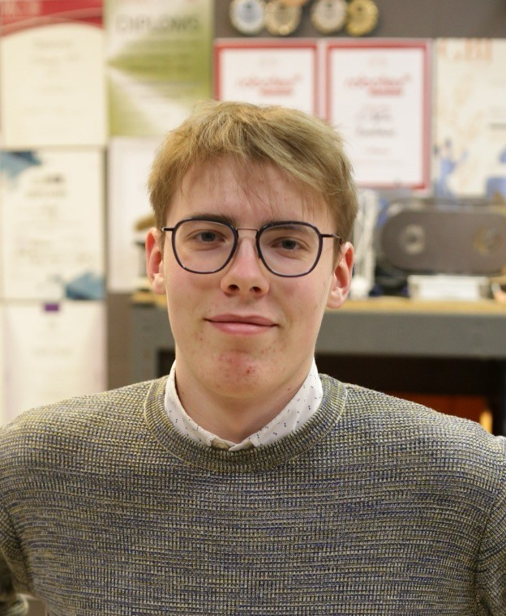

"Ja tas, kas sagādā prieku man, iepriecina arī citus, tad no tā mans prieks tikai vairojas."
Siguldas pilsētas vidusskolā strādāja no 2022. līdz 2024.gadam
Intervētājs Renārs Masulis
Kā jums gāja pašā sākumā, kā sākāt strādāt skolā?
Es absolvēju 12.klasi Siguldas pilsētas vidusskolā un devos studēt uz Rīgas Tehnisko universitāti. Aptuveni gadu vai divus pēc vidusskolas beigšanas es atgriezos savā skolā jau kā skolotājs. Mani pirmie mācību priekšmeti bija fizika II (padziļinātais kurss 12.klasei) un robotika. Tā kā fizika, mehānika un eksaktās zinātnes ir mana sirdslieta, tas bija patīkams izaicinājums, lai gan pašam arī nedaudz vajadzēja atsvaidzināt zināšanas, lai sagatavotos stundām.
Vai jums patika mācīt skolēniem?
Jā, noteikti, citādi es to nedarītu. Jau vidusskolas laikā es sāku pasniegt nodarbības Siguldas Jaunrades centrā, un tieši tur man iepatikās mācīt bērnus un nodot savas zināšanas citiem. Ja tas, kas sagādā prieku man, iepriecina arī citus, tad no tā mans prieks tikai vairojas.
Vai skolēni Jūs klausīja?
Domāju, ka jā. Protams, skolēni ik pa laikam izdomā kādus pigorus, bet kopumā mēs atradām kopīgu valodu un lielu problēmu ar disciplīnu nebija.
Kuru klašu skolēnus jūs mācījāt?
Sākotnēji mācīju 12.klasi. Otrajā gadā sāku pasniegt fiziku arī 8.klasei. Tāpat vadīju arī robotikas stundas.
Vai jums bija stress pirms stundām, un kā jutāties pirmajā reizē, kad iegājāt kabinetā un bija jāvada stunda?
Klases priekšā jutos diezgan brīvi, jo man jau bija pieredze, vadot interešu izglītības nodarbības Jaunrades centrā. Lielākais satraukums bija tieši par mācību materiālu sagatavošanu, jo fiziku skolā iepriekš nebiju pasniedzis un viss bija jāveido no jauna. Man bija svarīgi sagatavot materiālus tā, lai skolēniem tie būtu gan saprotami, gan kvalitatīvi. Lielākais izaicinājums bija laika plānošana, jo darbu skolā vajadzēja apvienot ar pilna laika studijām, nodarbībām Jaunrades centrā un vēl citu darbu.
Kādi ir vislabākie atmiņā palikušie mirkļi no darba Siguldas pilsētas vidusskolā?
Visvairāk man patika mācīt fiziku 8.klasei, jo es centos nodarbības veidot ļoti praktiskas, iekļaujot dažādus eksperimentus. Mums bija lieliska un draudzīga atmosfēra. Spilgti atmiņā palicis gadījums, kad saderēju ar klasi par kādu fizikas tēmu, zaudēju derībās, un man nācās visiem nest keksiņus. Arī robotikā gāja interesanti - kopā ar skolotāju Anci Kanceri un skolēniem izveidojām elektroniskus mākslas objektus, piemēram, pīkstošas un krāsas mainošas kastes, ko izvietojām skolas telpās.
Vai jūs joprojām kaut kur mācāt?
Jā, mana skolotāja karjera turpinās. Šobrīd es pasniedzu lidmodelismu Siguldas Jaunrades centrā, kā arī lasu lekcijas teorētiskajā mehānikā un datorikā Rīgas Tehniskajā universitātē.
Cik gadus nostrādājāt Siguldas pilsētas vidusskolā?
Sanāk, ka Siguldas pilsētas vidusskolā nostrādāju divus gadus.
Cik gadus kopumā jau strādājat pedagoģijā?
Kopumā tie ir aptuveni 8 gadi, jo nodarbības Jaunrades centrā sāku vadīt jau mācoties 11.klasē. Pārsvarā tas vienmēr ir bijis Jaunrades centrs, pa vidu divi gadi vidusskolā, un tagad esmu pievienojies arī RTU mācībspēkiem.
Tā kā jūs mācījāt padziļināto fiziku (Fizika II), skolēniem bija jākārto eksāmeni. Vai lepojaties ar viņu rezultātiem?
Es ļoti lepojos ar to, ka mani 12.klases skolēni sekmīgi nokārtoja Fizika II eksāmenu. Neskatoties uz to, ka viņu mācības iepriekš bija ietekmējis Covid-19 un zināšanās varēja būt kādi robi, viņi spēja visu veiksmīgi apgūt un nokārtot. Bija liels prieks un gandarījums ar nepacietību gaidīt un ieraudzīt šos labos rezultātus.
Sanāk, jūs sākāt mācīt tad, kad sākās Covid-19 vai jau pēc tam?
Es sāku strādāt jau pēc pandēmijas. Taču, pasniedzot stundas jaunākajām klasēm, varēja just, ka iepriekšējais attālināto mācību periods ir atstājis zināmus robus viņu pamatzināšanās. Tāpēc mēs kopīgiem spēkiem centāmies šīs tēmas atkārtot un atgūto visu iekavēto.
SĀKUMS